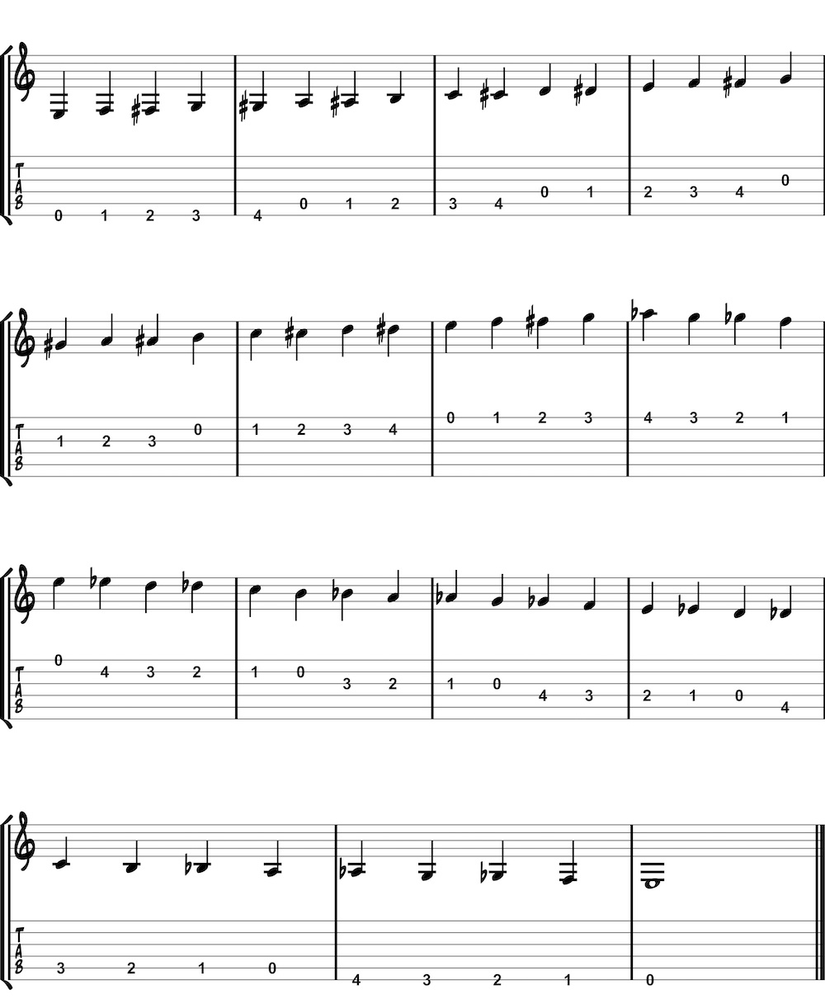

Practice scales on their own or along with another technique. As you learn more theory, apply these same methods to new scales. Don’t worry about the theory for now; just focus on playing the scale. Try to recognize the notes by saying the note name out loud. Don’t just think it. Say it out loud! Scales are also a great way to practice technique in a slightly more musical context.
The chromatic scale contains all twelve notes of the octave. Start by playing it in the open position and eventually progress to other positions up the neck.
